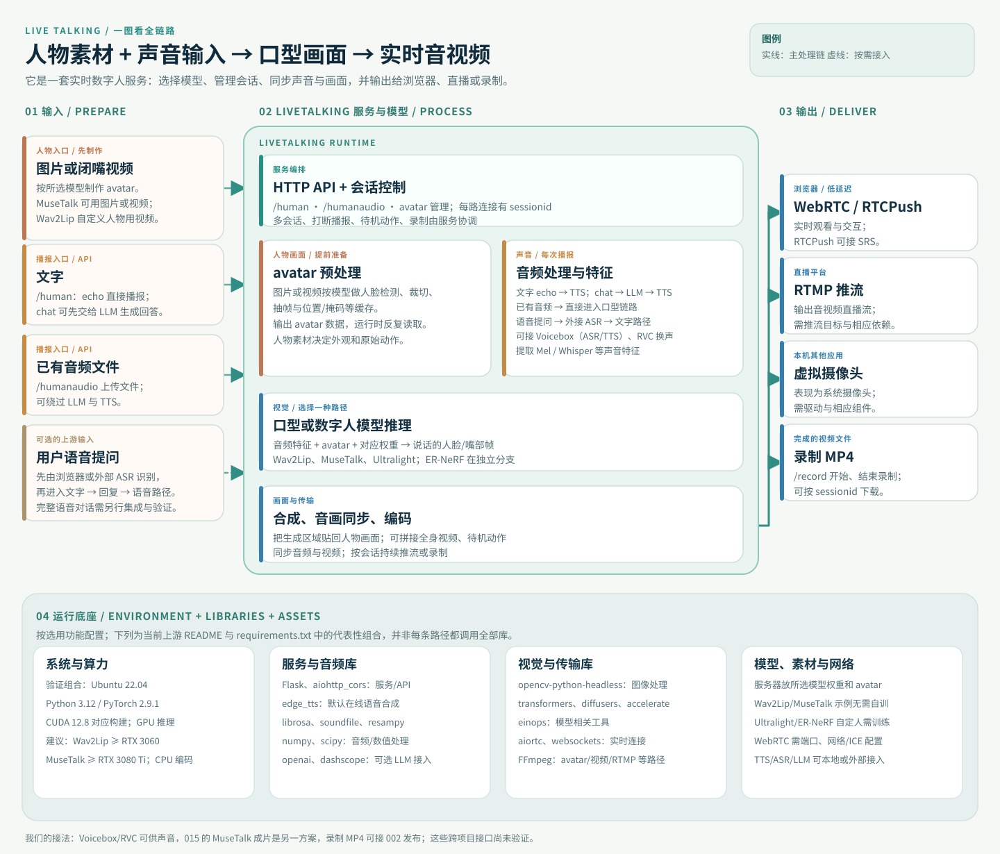
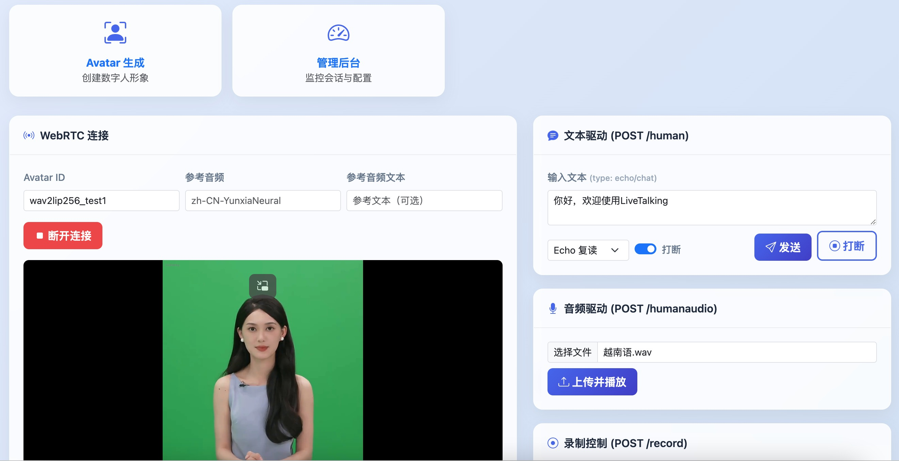

必需
口型模型 + 人物素材
至少选一种口型模型（如 Wav2Lip 或 MuseTalk），下载对应权重和 avatar。官方示例可直接使用预训练文件，无需先自行训练。
查看官方示例文件 ↗OPEN SOURCE RESEARCH / 004
LiveTalking 是实时数字人服务框架：先把图片或视频做成人物 avatar，再用文字或已有音频驱动口型模型，生成同步的声音与画面，实时播放、推流或录制。
基于 项目 README 与 官方使用说明 整理 · 2026.09.25 · 首屏使用本页完整架构图；真实动态效果见下方官方演示

INPUT → MODEL → OUTPUT一张图看懂整个流程官方素材 / ACTUAL PREVIEW
首屏展示的是研究架构图。下图来自 LiveTalking 原仓库，展示实际网页中的人物画面与输入区；嘴型是否跟声音同步，需要看动态演示。

上游 README 给出了不同模型的效果演示。打开视频后重点观察嘴型和声音是否同步、画面接缝以及说话时的稳定性。
01Wav2Lip 演示↗02MuseTalk 演示↗03ER-NeRF 演示↗链接来自原仓库 README；视频在 Bilibili 打开。01 / 先回答最重要的问题
自托管口型渲染时，模型权重与人物 avatar 数据放在运行 LiveTalking 的电脑或服务器上。浏览器只接收画面，不需要给每位观众安装模型。
至少选一种口型模型（如 Wav2Lip 或 MuseTalk），下载对应权重和 avatar。官方示例可直接使用预训练文件，无需先自行训练。
查看官方示例文件 ↗默认 EdgeTTS 调用在线服务。“口型模型本地运行”不等于整套流程离线。
入口与出口 / INPUT → OUTPUT
可以用“声音 + 人物图片或视频”来理解，但它分为准备形象和每次播报两步。外观来自人物素材，口型由声音驱动。
MuseTalk 的 avatar 可以从图片或视频制作；Wav2Lip 的官方自制流程使用闭嘴、不说话的视频。也可直接用下载的示例 avatar。
文字先由 TTS 生成声音，已有音频可直接上传。模型读取声音特征，主要生成嘴型和口周画面，再贴回人物素材；眉眼表情与身体动作并非仅靠这段音频完整生成。
这是一段连续的音视频画面，而非一个新的 3D 人物文件。画面中的外观、背景和身体动作主要取决于人物素材与动作编排。
02 / 能力地图
从文字或音频输入，到口型生成、会话控制和多种输出方式。声音克隆的实际能力取决于所选 TTS。
文字可直接播报，也可先由 LLM 生成回答；已有音频可上传后直接驱动画面。
/human · /humanaudio多种模型根据声音生成嘴部画面，再合成到预处理的人物视频中。
Wav2Lip · MuseTalk每个连接有自己的会话；支持打断播报、静音动作和多个并发会话。
sessionid · interrupt送到浏览器、直播平台或虚拟摄像头；也可录制后制作视频内容。
WebRTC · RTMP · MP403 / 工作原理
同一套数字人画面，因输入方式不同，依赖也不同。点击下方路径即可切换。
echo 模式直接朗读传入的文字，无需大语言模型；TTS 先把文字变成声音，口型模型再生成画面。
视频或图片预处理为 avatar 帧和脸部位置数据。实时生成时，模型在这些人物画面上修改说话区域。
从音频提取 Mel、Whisper 等特征；Wav2Lip、MuseTalk 等模型据此生成与声音对应的口型。MuseTalk 使用图像潜空间的单步补绘。
生成区域合成到人物画面，再与音频对齐并编码成实时流或录制文件。
声音特征驱动口型模型生成画面，合成后的音视频再送入推流层。查看官方架构 ↗ · MuseTalk 模型说明 ↗
04 / 模型选择
口型模型权重决定如何生成嘴部画面；avatar 保存具体人物的预处理素材。不同模型各自有文件与制作方法。
| 模型路径 | 要准备的资源 | 自己训练？ | 适合何时看 |
|---|---|---|---|
| Wav2Lip官方最快试跑路径 | models/wav2lip.pth + 示例 avatar；自制头像还要关注人脸检测模型 | 示例无需 | 先验证效果与接口 |
| MuseTalk另一种口型画面方案 | 对应的 models/ 文件 + musetalk_avatar1 等素材 | 示例无需 | 进一步比较画质与性能 |
| Ultralight人物专属模型 | 训练后的 checkpoint、检测模型与 avatar | 官方路径需要 | 有明确人物定制需求 |
| ER-NeRF位于独立分支 | ernerf-rtmp 分支及人物训练产物 | 自定人物需要 | 研究该分支的专项方案 |
“无需训练”只是说可用现成权重试跑，不代表无需下载权重；也不代表模型、素材和生成内容自动取得商业使用权。
来源：官方模型使用说明。各下载地址与文件名应在实际部署时重新核对。
05 / 运行环境
以下是上游声称已测试的组合与性能建议，不等于本站已完成安装验证。
官方建议 Wav2Lip256 用 RTX 3060 及以上，MuseTalk 用 RTX 3080 Ti 及以上。显卡负责口型推理，CPU 承担每路视频编码；官方没有给出统一的最低显存和系统内存数值。
分辨率与并发会改变实际负载WebRTC 示例默认监听 TCP 8010；官方示例同时列出 UDP 端口范围。远程部署还要核对网络、ICE/STUN 与防火墙配置。
浏览器是客户端，推理由服务器运行先装项目 Python 依赖；自制 avatar、RTMP、虚拟摄像头、本地 TTS 或 ASR 会增加 FFmpeg、驱动或额外服务。
不要一次安装所有可选能力主仓库 README 已列出 Ubuntu 22.04 / Python 3.12 / PyTorch 2.9.1 / CUDA 12.8；官网安装页和仓库 Dockerfile 仍保留较旧组合。试跑当前主分支时以当前 README 为起点。
对照旧安装页 ↗06 / 什么时候对你有用
现在先把能力地图记清楚。有明确需求时，再用真实素材评估画质、响应时间和部署成本。
可探索的个人 IP 内容流程
015 的视频成片已本机验证；把 Voicebox、RVC、LiveTalking 与发布工具接成完整链路，仍需逐项测试。
课程、知识内容或展厅讲解；关注口型自然度和长时间播放稳定性。
接入知识库与语音问答；关注整体延迟、打断和同时在线人数。
实时推流或先录制成片；关注人物授权、平台要求和制作效率。
给现有助手增加可见角色；先判断视觉存在是否真正提升体验。
我们的实践 / 015 → 004
此前的 015「从声音到数字人物」练习，已经在本机用 MuseTalk 1.5 做出了有声人物视频。LiveTalking 与它有模型重叠，但提供的是另一套实时音视频服务。
015 使用人物照片、动作视频和语音，经过本地口型推理与融合，输出带声音的 MP4；另有独立的 Audio2Face-3D 路线驱动三维人物面部。
手机上可左右滑动查看完整对比 →
| 比较点 | 此前的 015 练习 | LiveTalking |
|---|---|---|
| 共同核心 | 视频路线已实际调用本地 MuseTalk 1.5，按语音重绘口型；3D 路线另用 Audio2Face-3D。 | 同样能选择 MuseTalk 口型路线，也提供 Wav2Lip 等模型；它本身不等于 Audio2Face 的 3D 路线。 |
| 人物动作 | 照片先由 LivePortrait、Hailuo 或早期 LTX 形成动作视频，再用 MuseTalk 贴口型；做过自研稳定与融合。 | 以预处理 avatar 为人物画面，支持待机动作和全身视频拼接；不会自动接入我们原来的动作生成流程。 |
| 出口与节奏 | 每句先生成并编码 MP4，网页再分段播放；有打断和切换，但不是实时视频通话。 | 围绕会话持续生成并通过 WebRTC、RTMP 或虚拟摄像头输出，也支持录制。 |
| 已经验证 | Windows + RTX 4070 Laptop 8 GB 已跑通 MuseTalk 1.5 和人物视频成片。 | 当前 004 只完成资料研究；尚未在本机安装或测试 LiveTalking 的实时帧率。 |
做预先生成的短视频，015 已有可复用流程；需要浏览器实时数字人、直播推流或标准会话接口时，再验证 LiveTalking。旧项目的模型文件和 avatar 缓存能否直接接入 LiveTalking，必须核对版本与数据格式。
015 的早期三段 4 秒视频各耗时约 24–26 秒；后续优化记录中，一段 4.52 秒视频的本地渲染耗时 8.172 秒。这些是不同阶段、不同流程的记录，均不证明已达到 LiveTalking 的实时推流指标。参见 015 练习记录与渲染记录。
能力组合 / 以前研究 × 当前库
这些项目各管一段：声音的输入与制作、人物画面、实时传输、成片发布。下面是可行的接法和验证状态，不表示它们已经组成一个可运行系统。
001 RVC、002 发布工具、003 Voicebox 和 004 LiveTalking 在当前研究中均未完成本机接入；跨项目端到端流程也尚未验证。
连接关系：Voicebox 的配音与 RVC 的换声是候选音频来源；015 和 LiveTalking 是画面出口的两种方案，不需要把两套口型模型串联使用。015 中的 MiniMax 对话/TTS、Hailuo 或 LivePortrait 动作素材，也不会自动成为 LiveTalking 的内置功能。
015 的 MuseTalk 已在本机验证；RVC、Voicebox 与 LiveTalking 的对应模型可以放本地，但本次研究没有安装它们。
015 曾用 MiniMax 对话/TTS、Hailuo 动作；LiveTalking 默认 EdgeTTS 需联网。是否离线取决于实际选用的模块。
浏览器接收实时画面；002 上传工具需要平台登录状态和成片文件。实时直播与视频上传是不同出口。
声音和画面各有自己的模型。用同一段语音、同一个人物素材比较同类模型，才能看出口型、音质和速度的差异。
ASR 把讲话转文字；TTS 把文字变语音；RVC 对已有音频换音色。Voicebox 整合 ASR/TTS 等声音能力，本身不是单一模型。
看什么：识别准确、发音自然、音色一致、生成速度MuseTalk、Wav2Lip 等接收音频与预处理的人物画面，生成与语音同步的嘴型帧，再融回画面。015 已本机验证 MuseTalk 1.5；LiveTalking 的具体组合尚未实测。
看什么：音画同步、面部自然度、身份保持、画面稳定015 用过 LivePortrait、Hailuo 等动作来源。口型模型主要处理说话区域，丰富的神态和身体动作还取决于素材或额外动作生成与编排。
看什么：动作自然、人物一致、与口型衔接015 还研究过 Audio2Face-3D：语音驱动三维面部动画，输出给 3D 人物使用。这与 MuseTalk 的二维视频口型是不同类型的结果。
看什么：表情系数、角色适配、实时表现015 把选定模型接成 MP4 成片流程；LiveTalking 把口型模型、人物、音频与 WebRTC/RTMP 会话接成实时流；social-auto-upload 接收成片去发布。若两边都选 MuseTalk，比较重点是版本、人物处理、速度和交付体验，不能把它说成两种完全不同的口型模型。
补充：口型模型依据连续的声音特征生成画面，并非查找预制嘴型图片。MuseTalk 在此使用 Whisper 音频编码器提取特征，不是先把语音识别成文字。MuseTalk 原项目 ↗ · Wav2Lip 原项目 ↗ · Audio2Face-3D ↗
切换后看每条路线的输入、输出与当前证据。
适合讲解、课程或短视频。可以从已经跑通的 015 视频路线继续，而不是为了成片先迁移到 LiveTalking。
现成文案即可；Voicebox 听写是可选的输入能力。
015 已用 Edge TTS，后来接过 MiniMax TTS；Voicebox 或 RVC 可以作为新的声音来源，接口待接。
优先复用 015 的动作素材 + 本地 MuseTalk → MP4；LiveTalking 录制是另一条待验证方案。
成片完成后再接 social-auto-upload；原工具尚未在自己的账号上试发。
适合网页交互或直播。这里 LiveTalking 的增量是持续音视频流、会话和推流接口。
文字可直接进入；语音提问需 ASR。Voicebox 可作为候选识别服务，但还没接线。
按需接 LLM 与 TTS；也可把已有音频直接送入 LiveTalking。外部 Voicebox / RVC 接入需验证格式与延迟。
LiveTalking 使用自己的 avatar 和所选口型模型生成画面；015 的权重与人物缓存不能直接假定兼容。
通过 WebRTC、RTMP 或虚拟摄像头输出；是否在本机稳定实时仍待测。
对应研究：001 RVC · 002 发布 · 003 Voicebox · 015 数字人物练习。能力边界与验证状态以各研究记录为准。
07 / 决策边界
这几个条件比单看演示视频更能决定后续投入。
官方以 inferfps 和 finalfps 都达到 25 作为实时指标。用户从提问到听到回答，还受 ASR、LLM、TTS 和网络影响。
开源版提供文本、音频驱动和基础推流；官方把开箱即用的实时语音对话、唤醒词打断、实时音频流输入等列在商用版。
LiveTalking 代码为 Apache-2.0，但原版 Wav2Lip 开源模型限制商业使用。MuseTalk 声明其代码与权重可商用，同时要求检查其他依赖；人物与声音素材也要有授权。
这个页面是知识整理，不是运行中的 LiveTalking 演示；此前 015 的本地 MuseTalk 成片见上方对比。后续试跑应先用示例 Wav2Lip/avatar 验证，再按目标场景选择模型与服务。
08 / 依据与延伸阅读
页面结合上游资料和我们此前的 015 实践记录整理；实际安装与商业使用以当时版本为准。